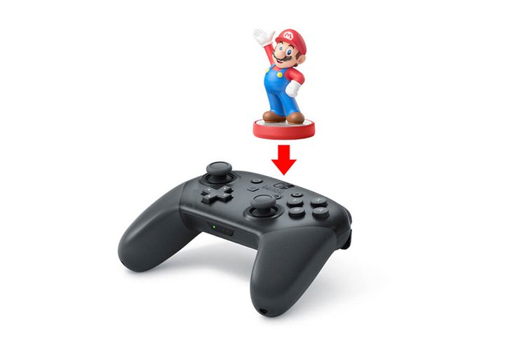
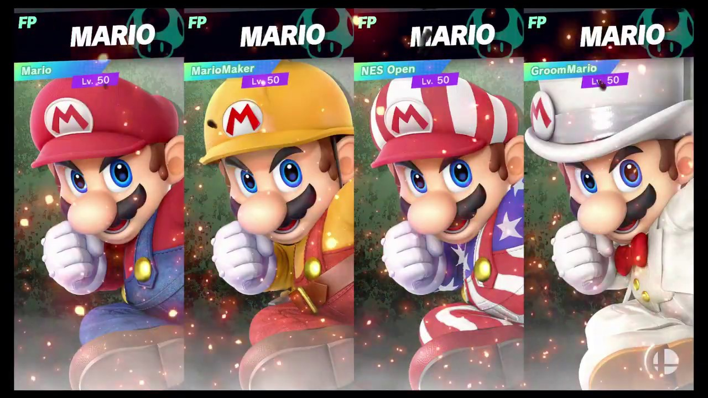
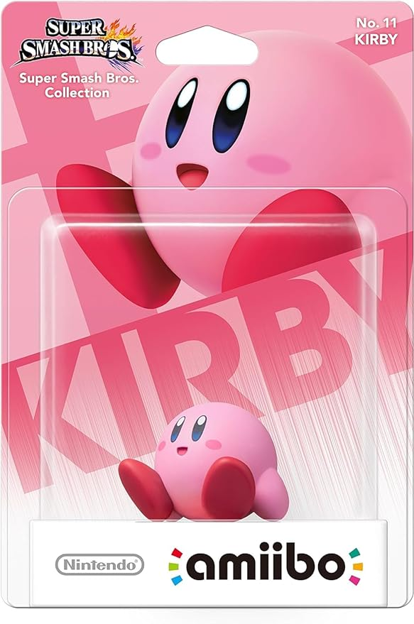
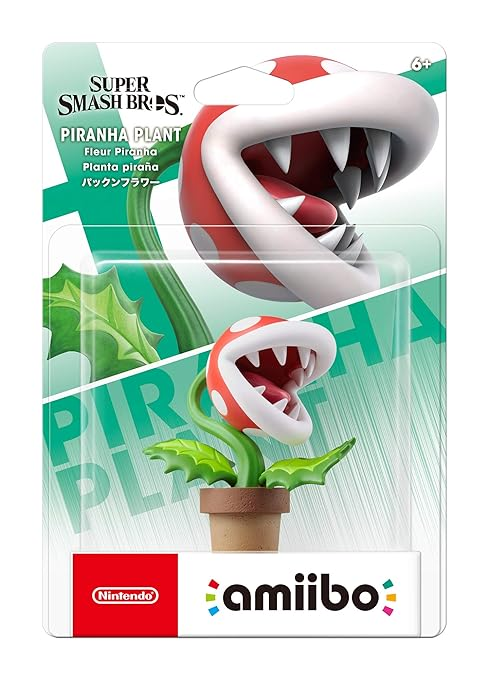
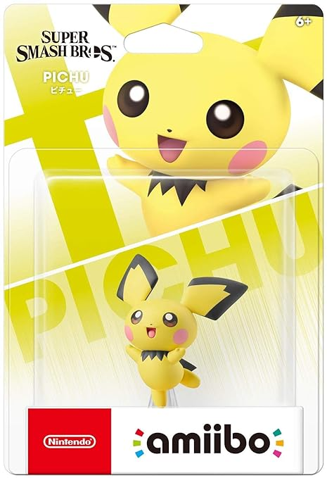
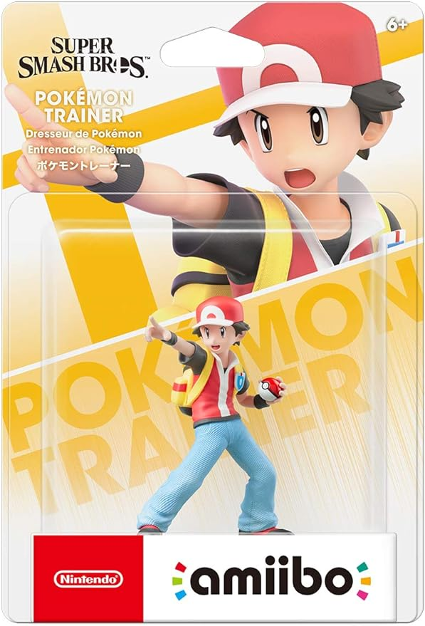
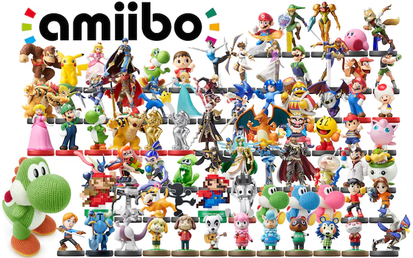

What Are Amiibos?
Amiibos are interactive figures that work with games the characters correspond with. In other words, along with being a cool collectable figurine, they also double as scannable data to import into your game. Depending on the game, results of scanning into the game may vary (for example in some games they just give you coins or an extra skin), but for the sake of today's topic, whatever Amiibo you scan will give you a completely new player.
When scanning an Amiibo into Smash Bros, the character shows up as a completely new player, as shown above. They start at Level 1, and as you fight them more and more they can level all the way up to level 50, where they become very strong and can copy your movement and skills.

You can save as many Amiibo players as you please onto Smash, and can even have them all fight each other, you sick weirdo. But other than that, they mostly function as a couple hours of fun training along with a collectable figure which looks really nice in your bedroom.
Smash Bros Amiibos
Now, it is time to showcase some of the various Smash Amiibos you can purchase, going from least rare to MOST rare. Before you go all crazy buying all of the Amiibos you can find on Amazon, use this list as a guide as to where you should start.
- Kirby
Kirby is probably the cheapest amiibo out there, coming in at a cool $22. Kirby was the second Smash Amiibo to ever exist, which you might think would make him rare, but only makes him far more common than some of the other Amiibos. He's also just a character that no one really plays, bringing down his popularity and therefore his price. Nonetheless, he is adorable, and would be a great starting point for any collector out there.
 - Piranha Plant
Piranha Plant, coming in at $41, is slightly more rare and valuable than Kirby. Despite being a garbage character that no one likes to play, he became a meme within the Smash community, hence the demand for this Amiibo. Along with being the first person ever to like this character, you could become a proud owner of a somewhat rare Amiibo by buying this figurine.
 - Pichu
Pichu is absolutely adorable, which partially explains why his Amiibo is so expensive. At $70, Pichu comes in at one of the rarer Amiibos to own, as demand for him in early 2019 was huge. He was considered one of the best characters in the game and the most precious as well, and although nerfs demolished this character's role in the meta, his cuteness has kept him very relevant amongst Amiibo collectors today. If you've got money to spend and you like Pokémon, this is the one for you.

- Pokémon Trainer
And finally, for you crazy rich people with nothing better to do with money, is the Pokémon Trainer himself. He's very special in the fact that this Amiibo actually comes packed with three characters at once: Charizard, Ivysaur and Squirtle. This attribute has skyrocketted the guy to the top of the Amiibo lists, being the most expensive individual figurine BY FAR at $135. If you really want to flex your net worth while also gaining a unique Amiibo with unique abilities, this one will work perfectly.

Collecting Amiibos: An Experience Worth Endulging In
Collecting Amiibos is extremely fun. Whether or not you choose to collect Amiibos in general or just Smash Amiibos, you will fine the most adorable, well-designed and intimately crafted figurines that one can find on the market for not-so outrageous prices.
If you have a decent amount of money to spend, and you enjoy having interactive collectables that can become an extra player, Amiibos are the way to go for you. And whether or not you think these types of things are stupid and not worth the time and spending, think again, because in 2016, these cost around $9 a pop, so who knows what they'll be worth in 2030. If not something you buy for fun, these could be an overall worthy investment a couple years down the line!
Citations
https://www.nintendo.co.uk/Hardware/amiibo-/About-amiibo/About-amiibo-932316.html. Nintendo Inc, Accessed 3/1/2024.
https://www.amazon.com. Amazon, Accessed 3/1/2024.